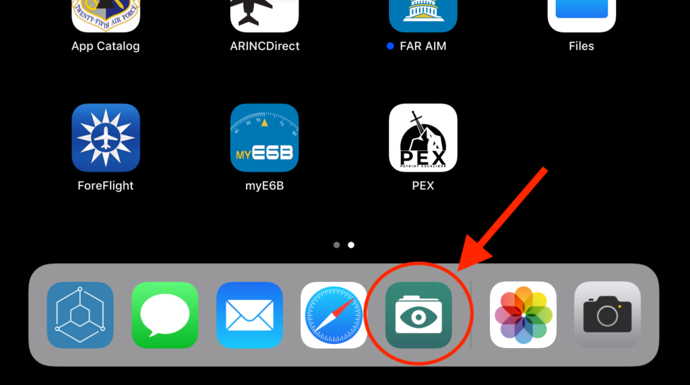
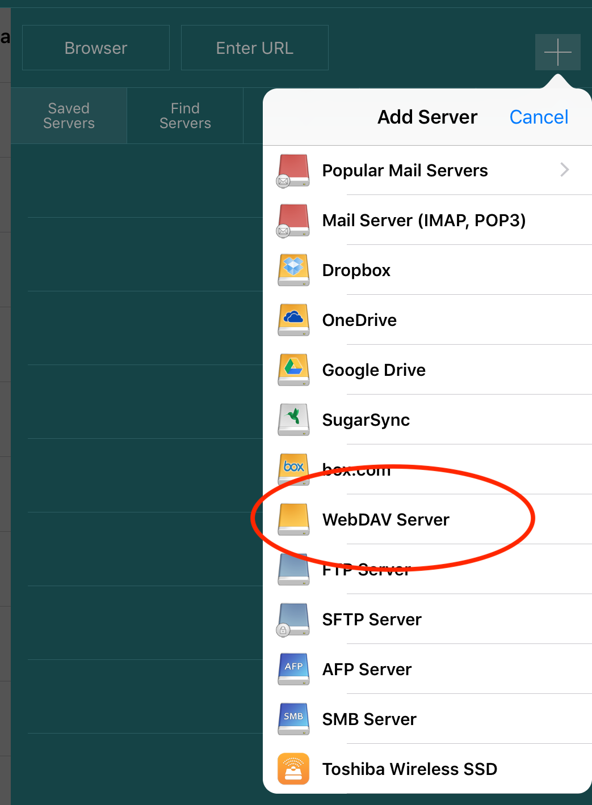
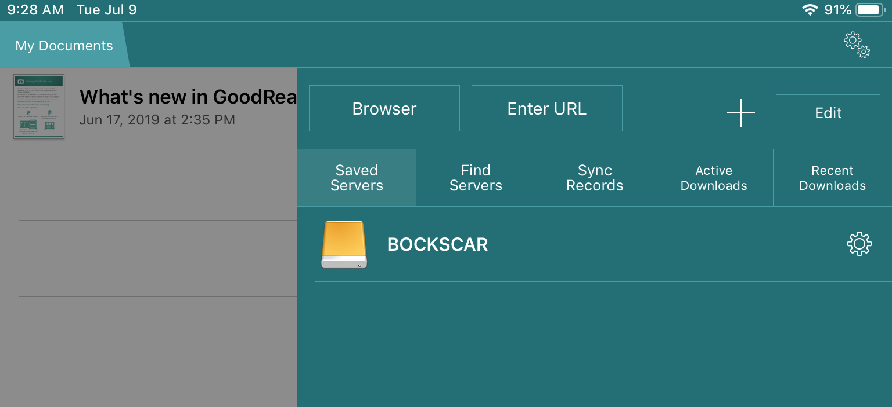
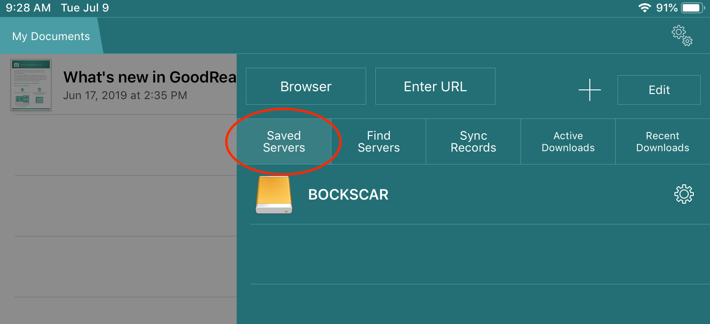
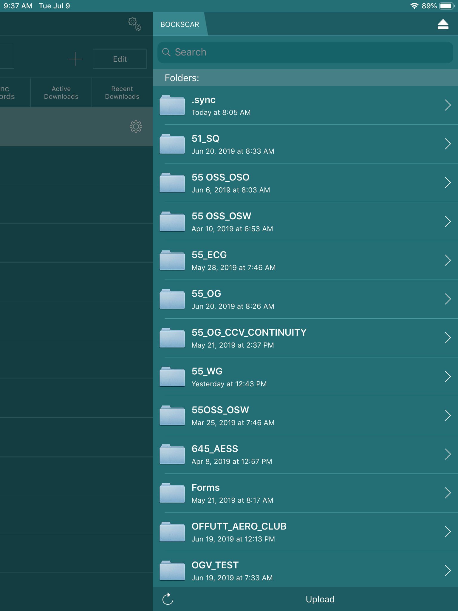

Syncing Publications with GoodReader¶
About File Syncing¶
Publications or other workcenter data are synced to your EFB/Mobile Device using an application called GoodReader.

GoodReader can automatically sync individual files and entire
folders from their remote versions hosted on the BOCKSCAR server. In GoodReader, all files and folders that are a part of the sync process
are tagged with a special badge:


You can choose whether or not you want to keep modified local files. This option may preserve notes that you've put over a PDF file, even if the corresponding remote file was deleted or modified on the server (Use this feature with caution. Please see I made notes/highlights to publications in GoodReader. Will they be lost when I sync? in the Mobile FAQ.
There are two different types of sync: normal sync and download-only.
A normal sync is two-way. It keeps the contents of a local file or a folder identical to what you have on a server. During this process, GoodReader analyzes the contents of both local and remote folders and does the following: - Looks for modified files (for example, freshly annotated PDFs) on your device and uploads them to a server, replacing old ones there - Looks for modified files on a server and downloads them to your device, replacing old ones there - Looks for new files on a server and downloads them to your device - Looks for new local files and uploads them to a server - Looks for deleted files on a server that were previously present, and deletes them from your device. - Looks for deleted local files that were previously present, and deletes them from a server.
A download-only sync is one-way, from the server to your device. It is a convenient distribution method for frequently-updated documents. This type of sync doesn't care what happens with your local files; It never puts anything on the server, never deletes anything from it, it only looks for new and modified remote files and downloads them as needed. When correctly configured, files that were deleted from the server will be deleted from your local device. The Aircrew Publications Library (APL) is a download-only sync. OGV maintains APL content on the BOCKSCAR server in a folder called
55_OG.
Initial Setup¶
For aircrew, this is usually done just before the device is issued to you. It only needs to be done once per each file/folder you wish to synchronize. All relevant remote files will be automatically downloaded to your device when doing the very first synchronization.
Instructions for initial setup:
Step 1: General App Settings¶
First, set up general settings in GoodReader.
- Tap the
Settingsbutton on the main screen.

- Select the
General Settingsmenu item.

- In General Settings, make the following changes:
- Turn off
Use iCloudfolder - Turn off
Use Downloadsfolder - Make sure that
Disable device auto-lockis on/enabled

- Turn off
Step 2: Add the BOCKSCAR WebDAV server¶
Next, add the BOCKSCAR server
- Tap the
Connectbutton on the main screen.

- Tap to highlight
Saved Servers, then the plus sign+to add a server. - Select
WebDAV Server.
 - Configure the new WebDAV Server as follows:
- Readable Title:
BOCKSCAR - URL-address:
pubs.bockscar.mil - Turn on/enable
Windows-style name encoding - Turn off
Use cookies - Leave all the other fields/settings unchanged

- Readable Title:
- Tap
Add. - You should now see BOCKSCAR listed as a saved server.

Step 3: Set up a Sync Folder¶
Now that you have the server added, we’ll need to configure GoodReader to sync with a folder on that server.
Note
55 OG Aircrew should sync the 55_OG folder. If you’re unsure, that’s probably what you should select. You can come back anytime and sync additional folders.
Note
Double-check the Sync Parameter settings on step 9. Incorrect settings here are a common source of sync-related issues.
- Tap the Connect button on GoodReader's main screen.
- Tap to highlight Saved Servers. 
- Select BOCKSCAR. A list of folders on the server are displayed.
 - Tap to highlight the folder you’d like to sync (We want to select the folder, not view its contents. So tap the folder name, not the
>to the right of it). - Tap
Sync, at the bottom of the screen (Be careful not to tap Download if it is an option here. We're setting up a sync, not a one-time download.) - If you get a pop-up that says Folder Already Exists select
Proceed. - Now we’ll tell GoodReader where to sync the folder to on your device. We want the folder in your top/root directory, called My Documents, so do not select any sub-folders. Tap
Download Here & Synchronize.

- If you see a Folder Already Exists pop-up, tap
OK. - Configure the Sync Parameters as follows:
- Turn on/enable
Download onlysync. - Make sure
Delete local filesis on/enabled - Turn on/enable
…even if they were edited. - POLICY ON SYNC CONFLICTS:
Actionneeds to beRemote files have priority. - Tap
Sync(orClose)
- Turn on/enable
- You’ve set up the folder to sync from the BOCKSCAR server. GoodReader will now begin to sync that folder. You should see:

Updating Synced Folders¶
To make sure you have the latest publications/T.O.s/files, update your synced folder(s). During the update, any synced configured during initial setup will pull updates from the server.
- Connect to a BOCKSCAR Wi-Fi Access Point.

- Open GoodReader. From the main screen, tap the
Syncbutton.

- A progress pop-up appears during the sync process. You should see:
Press the Hide button to hide this pop-up and continue the sync in the background. You'll be able to continue reading your documents while the sync is working (Press the Sync button again to bring back the hidden progress popup). You can press the popup's schedule button to set up an automatic, periodic sync execution. If you switch to another app while GoodReader's Sync is in progress, iOS may stop the sync.
Failed Sync¶

Please see My Pubs Won't Sync in the Troubleshooting section for further instructions.